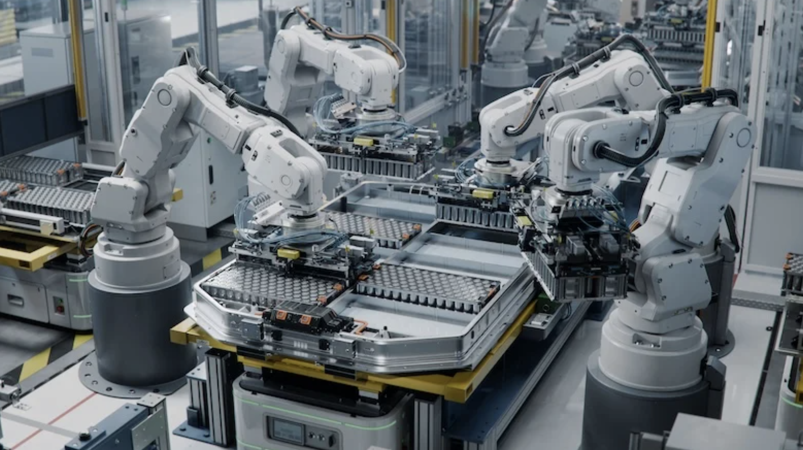
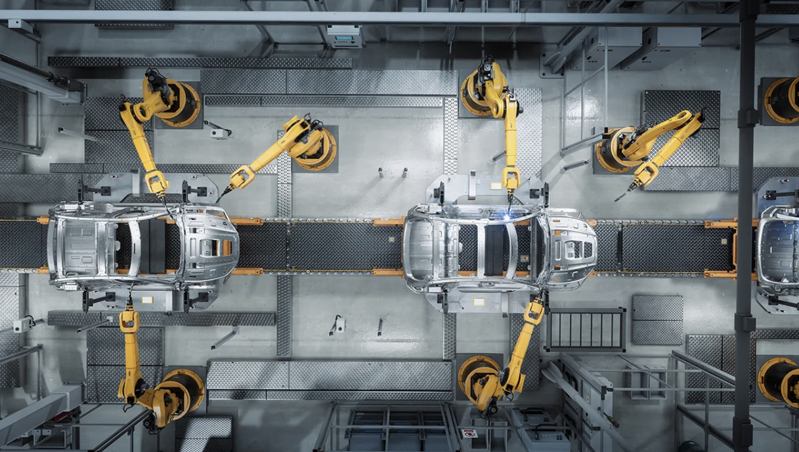

电池能量计算
Energy = Voltage × Capacity
能量密度、安全、寿命、快充、低温与成本彼此牵制。这个项目把材料选择放回电芯、电池包和整车系统中，帮助普通读者看懂“性能更好”究竟意味着什么。
核心问题：材料层面的优势，如何在真实系统中转化，又在哪里被抵消？

从材料开始
一颗电芯不是六张薄片的简单叠加。每一层都在容量、阻抗、寿命和安全之间承担不同任务。
离子与电子的两条路
简化教学模型：真实电极是多孔复合结构，离子运动也不是一条直线。
高能量、安全、寿命、快充、低温、成本与资源无法同时达到极值。先建立全局坐标，再进入每一种材料体系。
范围用于建立数量级直觉，不是单一产品规格；点击体系可查看测试条件与来源。
互动比较
质量能量密度使用范围图；安全、快充、低温、资源、成本与成熟度使用定性等级。最多选择四种技术。
Low / Medium / High 是基于材料特性、商业成熟度和常见系统表现的教学概括，不是认证评级。
网站核心交互
向下滚动，观察电压与容量如何组合，结构与热管理为何占据质量，能量又如何进入电机并返回电池。
冬季续航实验
搜索中文名、英文名、缩写或化学式。列表只显示核心角色；完整的性质、局限、可持续性与来源放在详情中。
尝试缩写、化学式或更宽的分类。
从“是什么”走向“为什么”

证据与边界
来源优先使用论文、政府/研究机构和制造商原始资料。制造商数据会明确标注，材料级结果不会冒充整车表现。
计算器是简化教育模型；测验提供解释而不只给对错。所有结果都明确显示使用条件。
Energy = Voltage × Capacity
Range ≈ usable kWh ÷ Wh/km
技术时间线
Why I Built This
我对材料科学感兴趣，因为一种材料的微观结构，最终会改变一辆车的续航、安全和使用方式。编写这个网站，让我能把研究、视觉表达和编程放进同一个长期项目。